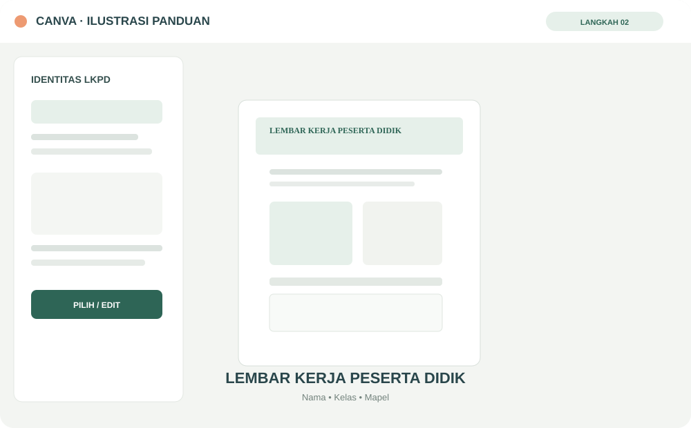
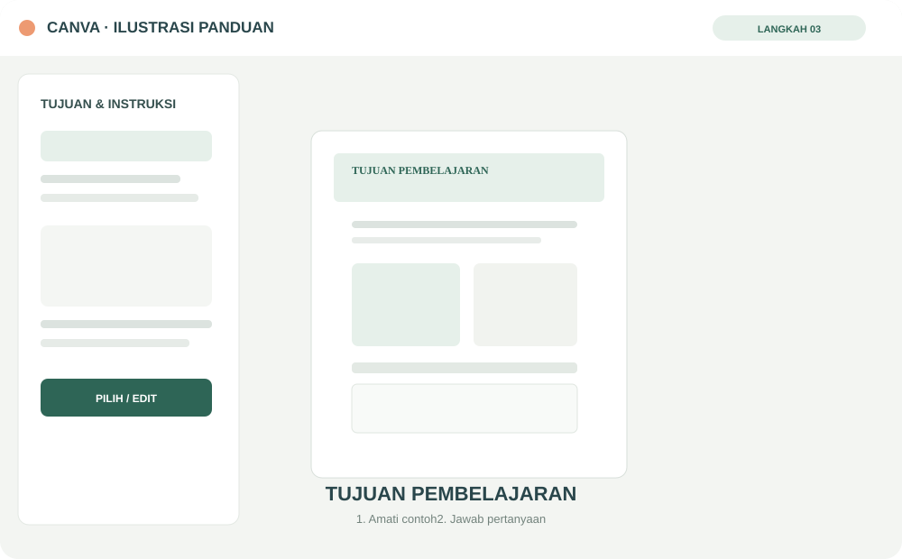
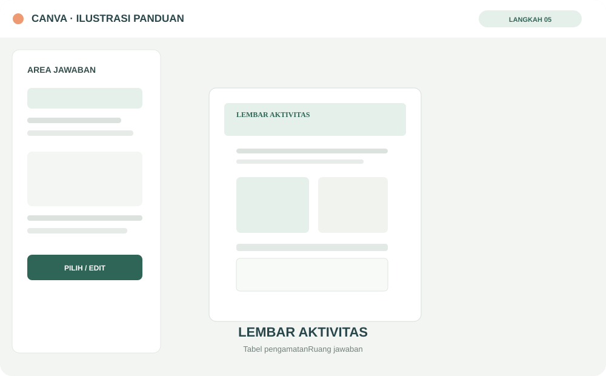
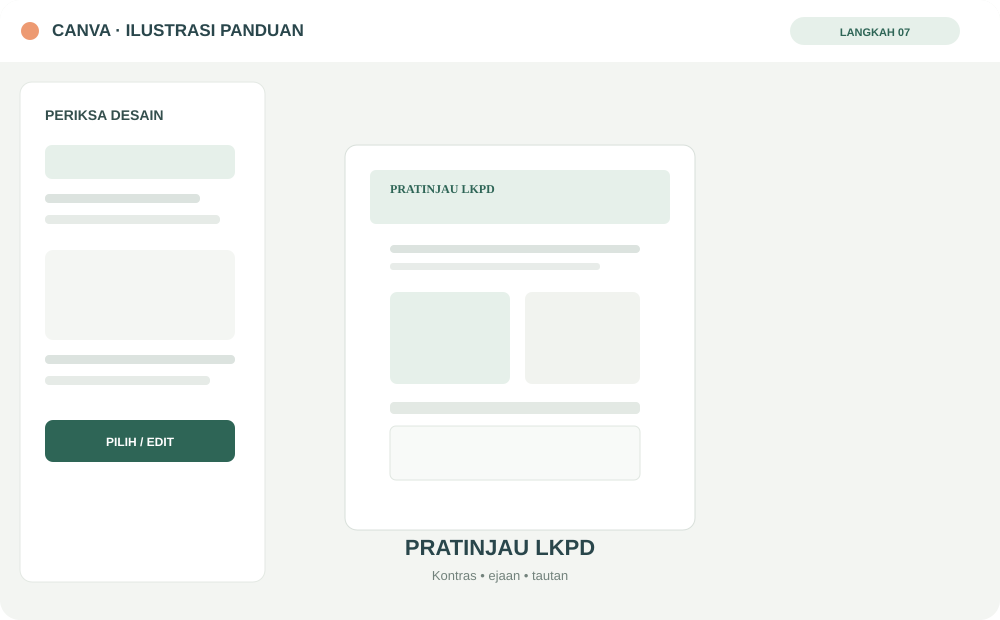
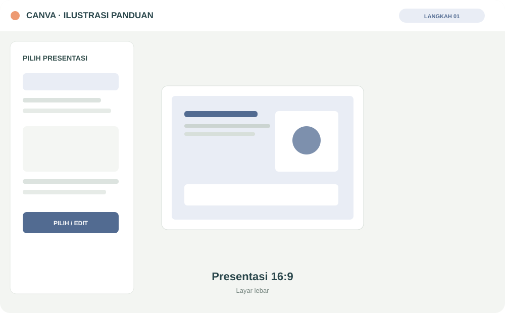
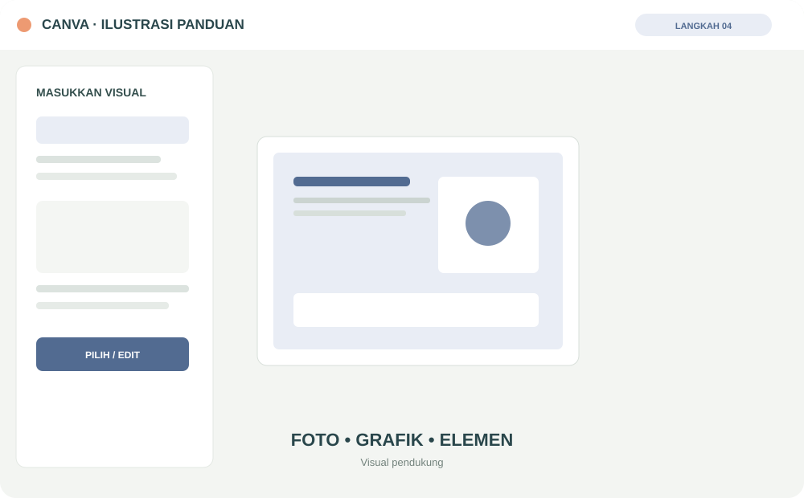
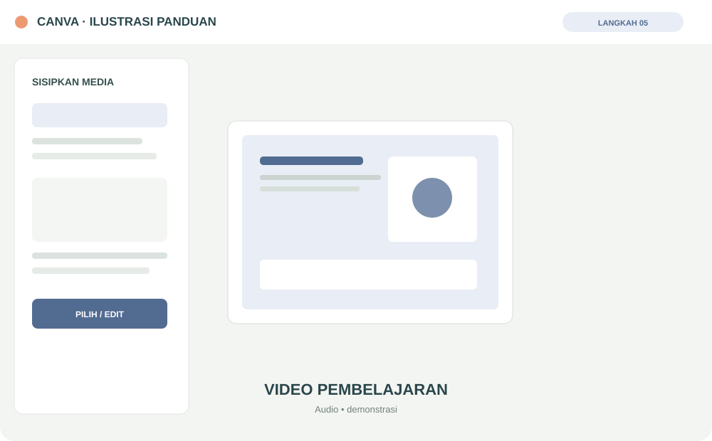
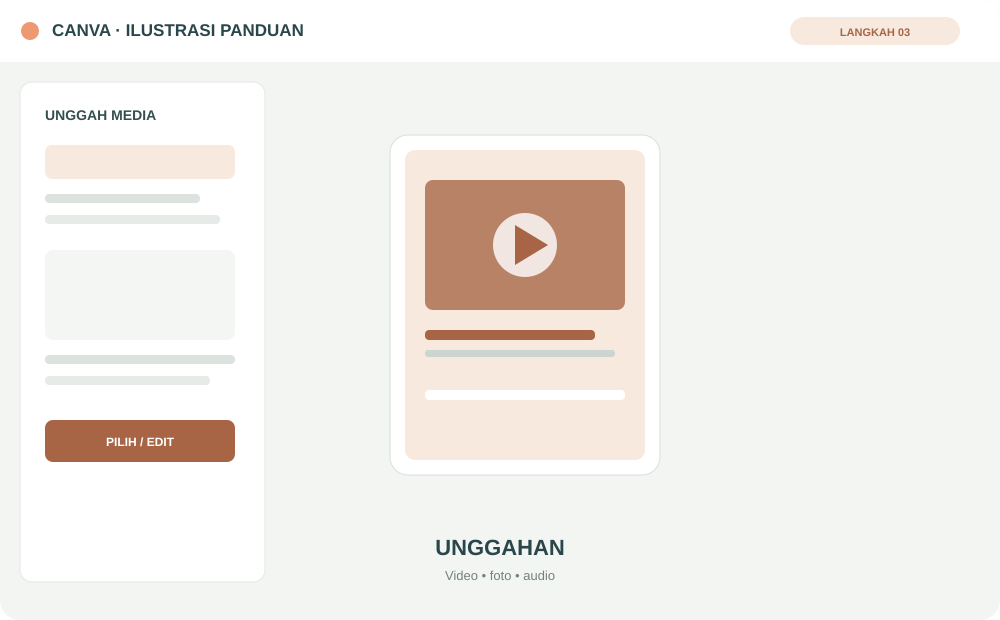
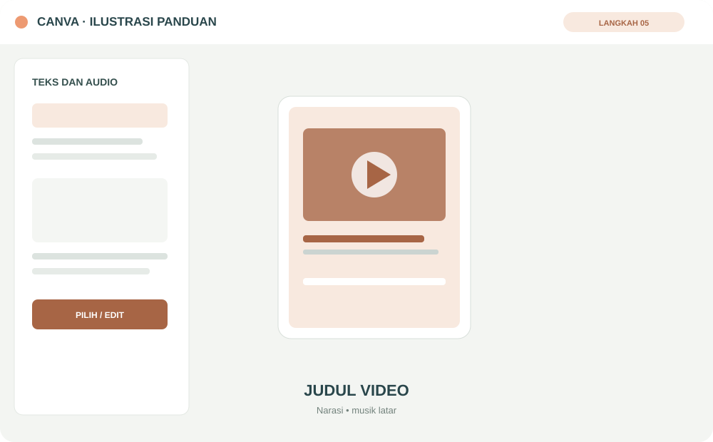

Buka menu dari sidebar
Gunakan tombol ☰ pada bagian atas untuk membuka atau menyembunyikan sidebar. Pilih menu yang ingin dipelajari.
Pelajari cara menggunakan Canva untuk merancang LKPD digital, presentasi interaktif, dan video pembelajaran yang dapat disesuaikan dengan mata pelajaran Anda.
Materi pelatihan dibuat umum. Contoh dan proyek dapat diterapkan pada kelas X, XI, XII, serta berbagai program keahlian di SMKN 3 Padang.
Ikuti tiga proyek inti dari merancang lembar kerja hingga membuat video pembelajaran.
Media yang baik bukan sekadar terlihat menarik. Media yang baik membantu peserta didik memahami, mencoba, dan menghasilkan sesuatu.
PRINSIP MERANCANG MEDIA AJARKenali cara menggunakan e-modul, mengikuti panduan Canva, dan menyimpan hasil pekerjaan Anda.
Gunakan tombol ☰ pada bagian atas untuk membuka atau menyembunyikan sidebar. Pilih menu yang ingin dipelajari.
Pahami keterampilan yang dituju serta urutan tiga proyek: LKPD digital, presentasi, dan video.
Baca uraian singkat, ikuti langkah kerja, lalu praktikkan di tab Canva yang terpisah.
Salin tautan desain Canva Anda, lalu catat pada bagian Hasil Karya. Pastikan pengaturan berbagi tautan sesuai kebutuhan.
Uji pemahaman setelah mempelajari semua proyek dan gunakan glosarium ketika menemukan istilah baru.
E-modul mengarahkan guru untuk memilih, membuat, dan menggunakan media digital dalam proses pembelajaran.
Sumber daya digital
Pengajaran dan pembelajaran
Memfasilitasi kompetensi digital peserta didik
Contoh pada e-modul dapat diganti sesuai mata pelajaran. Guru Teknik Komputer dan Jaringan, Pemasaran, Akuntansi, Perhotelan, Kuliner, mata pelajaran umum, dan bidang lain dapat menggunakan alur yang sama dengan isi yang berbeda.
Pelajari prinsip desain dan langkah praktis untuk membuat lembar kerja yang informatif, menarik, serta mudah digunakan peserta didik.
Gunakan satu topik pembelajaran dari mata pelajaran yang Anda ampu.
Tuliskan apa yang harus dikerjakan peserta didik dengan kalimat ringkas dan langkah yang runtut.
Gunakan foto, diagram, ikon, atau ilustrasi untuk membantu menjelaskan konsep, bukan hanya sebagai hiasan.
Sediakan area jawaban, tabel, kotak refleksi, atau petunjuk untuk mengunggah hasil pekerjaan.
Tambahkan tautan ke video, bacaan, formulir, atau sumber lain dan periksa kembali aksesnya.
Ikuti urutan berikut sambil mencoba langsung pada Canva.
Masuk ke Canva, cari template LKPD, Worksheet, atau gunakan ukuran dokumen A4. Pilih desain yang mudah dibaca dan tidak terlalu ramai.
Tambahkan judul kegiatan, mata pelajaran, kelas, topik, nama peserta didik, dan informasi lain yang diperlukan.

Tulis tujuan aktivitas dan petunjuk kerja menggunakan kalimat singkat. Gunakan penomoran agar urutan tugas mudah diikuti.

Pilih menu Elemen untuk mencari ikon, ilustrasi, diagram, atau bentuk. Gunakan Unggahan untuk menambahkan foto dan dokumen sendiri.
Gunakan garis, tabel, kotak, atau ruang kosong agar peserta didik dapat menuliskan jawaban atau mengisi hasil pengamatan.

Pilih teks atau elemen, gunakan ikon tautan, kemudian masukkan alamat video, bacaan, atau formulir pendukung.
Pastikan ukuran huruf nyaman, kontras cukup, instruksi tidak terpotong, dan semua tautan dapat dibuka.

Bagikan tautan Canva dengan pengaturan akses yang sesuai atau unduh sebagai PDF untuk dibagikan kepada peserta didik.
Buat LKPD untuk satu topik yang Anda ajarkan. Sertakan tujuan, petunjuk, materi/visual, aktivitas, dan ruang jawaban. Simpan tautan desain agar dapat ditambahkan ke portofolio.
Susun presentasi yang tidak hanya memuat teks, tetapi juga visual, video, dan aktivitas interaktif untuk mengajak peserta didik berpikir.
Bangun urutan materi dari apersepsi hingga kuis atau refleksi.
Cari template presentasi atau mulai dari halaman kosong dengan rasio layar lebar.

Susun kerangka 5–8 slide: pembuka, tujuan, konsep, contoh, aktivitas, kuis, dan penutup.
Pilih warna, tipografi, dan tata letak yang seragam. Duplikasi halaman untuk menjaga konsistensi.
Gunakan menu Elemen, Foto, Grafik, atau Unggahan. Pastikan setiap visual membantu menjelaskan topik.

Unggah media sendiri atau gunakan sumber yang memiliki izin penggunaan. Atur ukuran dan posisi agar tidak menutupi informasi penting.

Buat slide pertanyaan, siapkan slide umpan balik, lalu hubungkan tombol jawaban dengan tautan ke slide tujuan bila fitur presentasi dan tautan tersedia.
Jalankan presentasi dari awal. Periksa urutan, keterbacaan, video, audio, serta setiap tombol dan tautan.
Atur izin melihat atau berkolaborasi. Siapkan versi PDF bila diperlukan sebagai bahan pendamping.
Buat presentasi 5–8 slide untuk satu topik pembelajaran. Sertakan visual pendukung, satu contoh atau demonstrasi, dan satu aktivitas kuis/refleksi.
Gunakan Canva Video Editor untuk menyusun video singkat, demonstrasi langkah, atau penjelasan konsep sesuai kebutuhan mata pelajaran.
Contoh target latihan: video mikro 30–60 detik atau disesuaikan dengan kompleksitas materi.
Judul, topik, dan tujuan atau pertanyaan pemantik.
Jelaskan istilah atau konteks yang perlu diketahui.
Tampilkan proses, contoh, prosedur, atau visualisasi yang menjadi inti video.
Berikan simpulan, satu pertanyaan, atau ajakan melakukan aktivitas.
Pilih Video/Video Seluler sesuai media tayang. Gunakan format vertikal untuk ponsel atau horizontal untuk presentasi dan layar kelas.
Susun alur pembuka, isi, demonstrasi, dan penutup. Siapkan file video, foto, atau rekaman suara yang akan digunakan.
Gunakan menu Unggahan untuk menambahkan klip. Anda juga dapat memanfaatkan media dari Canva sesuai ketentuan lisensinya.

Atur urutan klip, potong bagian yang tidak diperlukan, dan sesuaikan durasi tiap adegan.
Gunakan teks untuk menekankan istilah atau langkah penting. Atur narasi dan musik agar suara utama tetap terdengar jelas.

Pilih transisi yang membantu perpindahan adegan. Hindari efek berlebihan yang mengganggu fokus pada materi.
Periksa ejaan, sinkronisasi audio, keterbacaan teks, kualitas gambar, dan durasi video.
Unduh video dalam format MP4 dengan kualitas yang sesuai, lalu bagikan melalui tautan atau platform pembelajaran.
Buat video 30–60 detik tentang satu konsep atau prosedur. Sertakan judul, penjelasan/demonstrasi, teks pendukung, dan penutup yang mengarahkan peserta didik.
Uji pemahaman mengenai prinsip desain LKPD, penyusunan presentasi, dan produksi video pembelajaran melalui Canva.
Istilah yang sering digunakan dalam pembuatan media pembelajaran digital dan pengoperasian Canva.
Ikuti tahapan sederhana agar proses belajar mandiri berjalan runtut dari orientasi hingga portofolio.
Pahami cara menggunakan e-modul dan hasil belajar yang dituju.
Pelajari prinsip desain, ikuti langkah, dan buat satu LKPD sesuai mata pelajaran.
Bangun presentasi visual 5–8 slide yang memuat contoh dan aktivitas.
Produksi video pembelajaran singkat dengan narasi, demonstrasi, dan teks pendukung.
Periksa pemahaman dan gunakan glosarium untuk mengingat istilah penting.
Kumpulkan tautan LKPD, presentasi, dan video pada satu daftar portofolio.
Seluruh tautan karya yang disimpan dari proyek LKPD, presentasi, dan video akan ditampilkan di sini.
Website mencatat judul dan tautan karya pada browser perangkat ini. File tetap tersimpan di Canva atau penyimpanan yang Anda pilih. Belum ada unggah otomatis ke Google Drive atau server sekolah.
Akses Canva dan telusuri mata pelajaran berdasarkan kelas serta program keahlian pada dokumen KSP SMKN 3 Padang.
Buka platform desain untuk mulai membuat karya.
Jelajahi materi belajar desain dan penggunaan Canva.
Daftar kelas dan mata pelajaran dirangkum dari BAB III KSP 2026/2027 yang dilampirkan.
Catatan: daftar ini merupakan ringkasan mata pelajaran. Penamaan dan pengelompokan perlu dicocokkan kembali dengan dokumen kurikulum final sekolah sebelum dipakai sebagai data resmi.